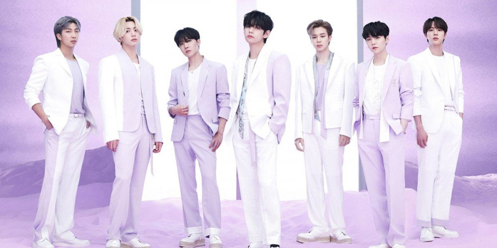

BANGTAN BOYS
First on my hobbies list is being a BTS fangirl. BTS (Korean: 방탄소년단; RR: Bangtan Sonyeondan), also known as the Bangtan Boys, is a seven-member South Korean boy band that began
formation in 2010 and debuted in 2013 under Big Hit Entertainment. The septet—composed of Jin, Suga, J-Hope, RM, Jimin, V, and Jungkook—co-writes and co-produces much of their own output.
How did become a BTS fan? It all started with a youtube ad. I wasn't interested at first, but after seeing consecutive ads and with the high number of views I decided to check them out.
This was the start of the never-ending beautiful tunnel into BTS' world. Around that period they released a new album called Map of the Soul: 7 to commemorate their 7th annivesary since
their debut. The second single on the album was what caught my fancy most, the song is basically about how one should view challenges.
Challenges should be avoided always, rather develop a mindset that helps to persevere even during down times. Also, after checking out more of their songs, I realized they don't focus
on the conventional love topic. Rather, they sing about problems that affect the youth of today like mental health. Enough can't be said about these spectacular boys.
TO ME THEY'RE LEGENDS ALREADY, IF YOU THINK OTHERWISE ARGUE WITH YOURSELF
Here's a link to BTS' official website

BTS
Korean is fun. Let's learn together
Ever heard of Coding; Let's explore together.